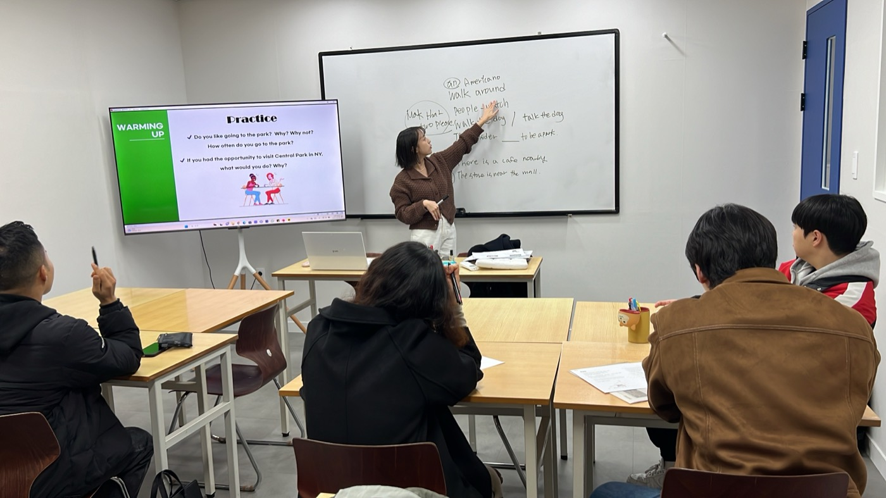
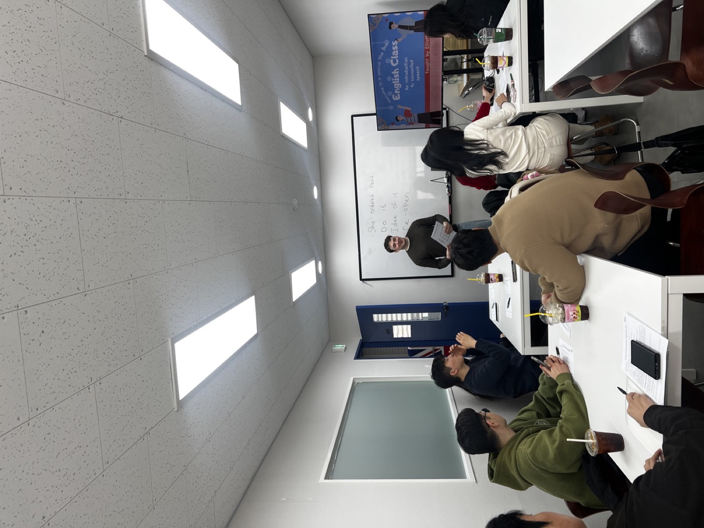

THE BOX ACADEMY
영어로 말하는 방법부터
영어로 말하는 방법부터
소통하는 방법까지
더박스 아카데미에서 기초부터 프리토킹까지,
단계별로 완성하세요.

더박스 아카데미에서 기초부터 프리토킹까지,
단계별로 완성하세요.
왜 영어가 안 나올까?
실력이 없어서가 아니에요. 머릿속 한국어를 단어 찾고, 문법 따지고, 어순 맞추다 보면 결국 말할 타이밍을 놓치고 멈춥니다.
“I… um… movie…?”
“I fell asleepwhile watching a movie.”
이건 능력 부족이 아닙니다.
제대로 된 회화 훈련을 받지 못했기 때문입니다.
아카데미가 다른 이유
전문 영어 선생님과 함께, 문법·표현을 뿌리부터 잡습니다.
한국어를 ‘번역’하지 않고, 영어 구조로 바로 생각해 입으로 꺼내는 훈련.
시제·전치사·관사 등 반복 실수 패턴을 뿌리부터 교정합니다.
수업 후 숙제 → 피드백 → 복습. 자동 반복 학습이 됩니다.
4~10명 소그룹으로 개인별 약점만 정확히 집중 교정.
암기가 아닌 구조 이해 → 직접 문장 생성으로 응용력을 키웁니다.
영어 문장을 처음 배우는 분도 부담 없이 시작할 수 있어요.
학습 프로세스
말하기 루틴이 몸에 밸 때까지, 이 순서로.
말이 안 나오는 이유부터 정리하고, 바로 써먹는 기본 문장 패턴을 먼저 잡아요.
예문을 내 상황에 맞게 바꿔 말하면서 ‘말하기 루틴’을 만듭니다.
콩글리시·어색한 표현을 다듬고, 더 자연스러운 대체 표현까지 익혀요.
짧은 반복 숙제로 복습하고, 개인 피드백으로 실수가 굳지 않게 잡아드려요.
아카데미 수업 현장
화이트보드 설명 → 예문 → 내 문장. 레벨에 맞춰 밀착 교정합니다.




📶 레벨 시스템
레벨에 따라 배우는 내용이 다릅니다. 정확한 레벨에서 시작하세요.
영어 문장을 처음부터 다시
🎯 “어제 뭐 했어?”를 스스로
문장은 되지만 디테일 부족
🎯 전치사·관사를 실수 없이
문법은 아는데 버벅임
🎯 뉘앙스 구분해 자연스럽게
정확도·표현력 동시에
🎯 스터디에서 자신있게 발언
집중 교정
암기가 아니라, 뉘앙스가 다른 표현의 차이를 예문으로 익힙니다.
“내 남자친구 진짜 재밌어” 성격이 좋다
My boyfriend is funny.
My boyfriend is fun.
funny 웃긴(comedy) · fun 즐거운(pleasure)
“나 약속 있어” 가벼운 일정
I have a promise.
I have plans.
promise는 서약처럼 무거운 단어
“그거 먹지 말걸…” 과거 후회
I shouldn't eat it.
I shouldn't have eaten it.
should have p.p. = 했어야 했는데(후회)
“어제 영화 봤어” 집에서 TV로
I saw a movie.
I watched a movie on Netflix.
see 눈에 들어옴 · watch 지켜봄
로또 “될지도 몰라” vs “그럴 리 없지만”
If I win… 가능성
If I won… 망상
동사를 과거형으로 → 현실과 거리가 멀어짐
‘일하다’ 말고 work 제대로
This medicine doesn't work. 효과 없다
That plan works for me. 괜찮다
work = 기능하다 / 효과 있다 / 작동하다
GRAMMAR AS SENSE
완전한 문장 속에서, 형광펜 친 표현이 왼쪽 한국어 뜻이에요. ↓ 항목을 눌러 펼쳐보세요
기초 & 중급 교정
경험·아직 안 한 일·지금까지 이어지는 상태는 현재완료, 끝난 사건은 과거형. 한국어엔 이 구분이 없어 90%가 틀립니다.
enjoy / finish / mind 뒤엔 ~ing, decide / want / plan 뒤엔 to.
처음 언급은 a, 서로 아는 그것은 the.
뉘앙스 차이 (Nuance)
will 즉흥적 결정 · be going to 계획됐거나 근거가 있을 때.
can 일반적 능력 · be able to 특정 상황에서 해냄.
의무가 강한 순서 — Must > Have to > Should.
핵심 표현 & 문법
동사+전치사 조합. 구동사를 알면 영어가 훨씬 자연스러워집니다.
동사 시제를 과거로 보낼수록 ‘현실과의 거리’가 멀어집니다.
수강 전 → 후
각 반을 수료할 때마다 — 같은 한국어가 입에서 어떻게 바뀌는지.
🔰 왕기초반 단어 나열 → 완전한 문장
“Yesterday… friend… pasta…”→“I ate pasta with my friend yesterday.”
“I… student.”→“I am a student.”
📗 기초반 콩글리시 → 자연스러운 표현
“I very like movie.”→“I really enjoy watching movies.”
“I have promise.”→“I have plans.”
📘 중급반 버벅임 → 살아있는 뉘앙스
“I went there.” (경험인데)→“I've been there.”
“I am going to order pizza.”→“I'll order a pizza.”
🎓 중상급반 교과서 영어 → 원어민급 표현
“If I have money…”→“If I were rich, I would…”
“Finally… taxi…”→“We ended up taking a taxi.”
한 단계씩 올라갈 때마다 — “내가 이걸 영어로 말할 수 있게 됐어!”
⏰ 시간표 안내
주 2회 · 1회 90분 수업으로 진행됩니다.
🌅 평일 오전반
11:00 ~ 12:30
12:30 ~ 14:00
월·수 / 화·목
🌙 평일 저녁반
18:50 ~ 20:20
20:30 ~ 22:00
월·수 / 화·목
☀️ 주말반
11:00 ~ 12:30
12:30 ~ 14:00
토·일
※ 레벨·요일에 따라 반 구성이 달라질 수 있으며, 정확한 시간표는 상담/레벨테스트 결과에 맞춰 안내드립니다.
PRICING
교재비 등 추가 비용 없이, 수업료만으로 진행됩니다. (주 2회 · 회당 90분)
연장·리뷰·후기·우수상·지인등록 등 추가 할인 제도가 있어요. 아카데미 수강생도 파티·행사 참여 가능!